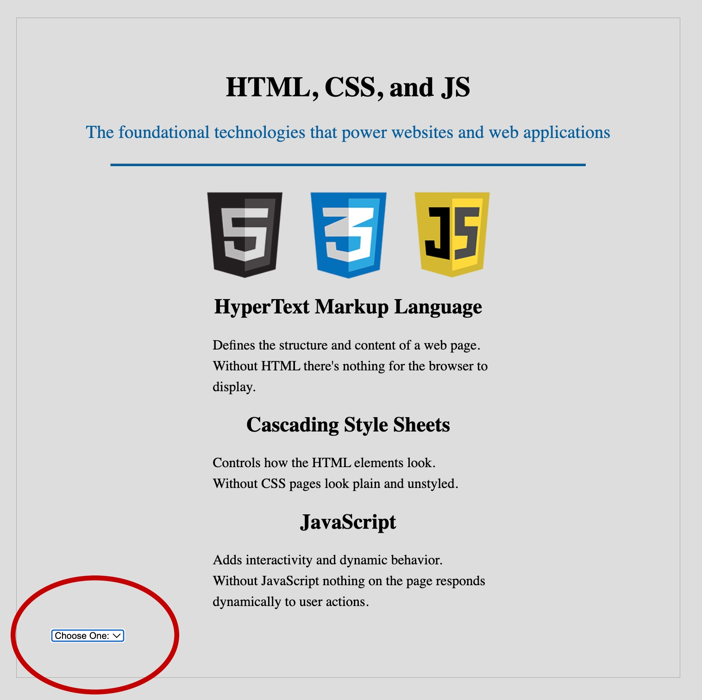

Ponder Projects
These are the "Ponder" projects completed throughout the Dynamic Web Fundamental (WDD131) course at Brigham Young University Idaho (BYUI). They are listed in order with the first being at the top left and most recnet toward the bottom right.
Meta Tags and CSS Review

This project is to intorduce the description and author MetaTags while reviewing CSS. It is a video guided project.
Video Guide One Video Guide TwoJs Variables and Constraints

This project is a video guided introduction to Java Script. It builds off the privious project.
Video GuideComputational Thinking

This project is to understand the way programmers think when they are solving problems with code. The site is the result of the "Downlaod Layout" below using computational thinking. This is a video guided project.
Video Guide Download Layout{kind=link}
DOM Basics
Practice using DOM basics in java script with varying tag, id, class, and img.
Video GuideResponsive Design

Approach to web development where web page layout and content adapt to different screen sizes and devices. A good responsive design ensures a consistent and optimal user experience.
Video Guide